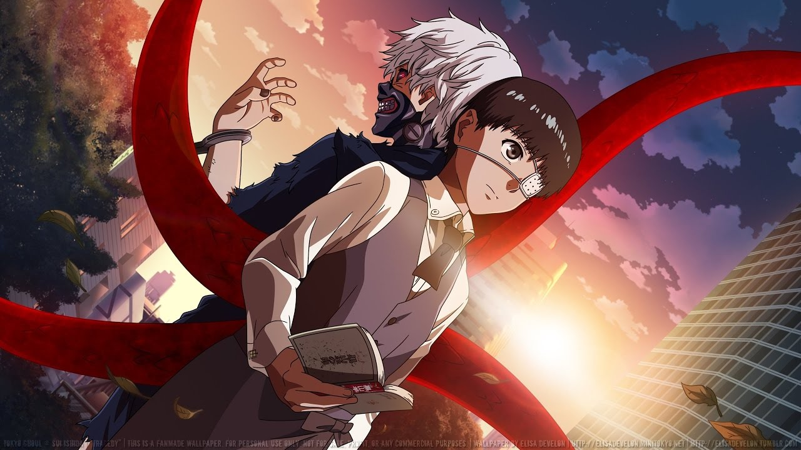

Tokyo Ghoul3/6/2016
Ken Kaneki University student in an accident gets to the hospital, where he was mistakenly transplanted organs of one of the ghouls - creatures that feed on human flesh. Now he becomes one of them, and for the people turns into a pariah, to be destroyed. But can he be his other ghouls? Or is now the world's no more room for him? This anime tells about the fate of Kaneki and what impact it will have on the future of Tokyo, where there is a continuous war between the two species.